Getting the right clinical data to the right clinician, for the patient who needs it most
Talis Clinical: a clinical decision support and remote patient monitoring platform for intensive care units, co-developed with Beth Israel Deaconess Medical Center, a Harvard Medical School teaching hospital.
- Company
- Talis Clinical
- Client / co-developer
- Beth Israel Deaconess Medical Center, a Harvard Medical School teaching hospital (Boston)
- My role
- First UX Designer, and the only one for most of my tenure: research, strategy, UI, design system
- Team
- VP of Product & Founder; Chief Innovation Officer (anesthesiologist); engineering
- Stakeholders
- 23-member BIDMC steering committee across adult and neonatal critical care
- Platform
- Responsive web: desktop for nurses, mobile for physicians
- Timeline
- ~12 months, discovery through UI and design system
A high-acuity product with no spec, and an engineering-led org
Talis set out to replace the EMR software used in Beth Israel Deaconess's ICUs with a platform of clinical decision support tools and remote patient monitoring. The goal was simple to state and hard to build: surface the right information, at the right time, for the patient who needs help most, without adding to clinicians' documentation load or to alarm noise.
I joined as the company's first UX designer, and for more than a year I was its only one. I had no medical background, but I had years of design practice and a full stack development certificate, which meant I could reason about the system end to end. I'd never thought of JavaScript as something that could affect life-or-death outcomes. Here, it did.
The program was governed by a 23-member BIDMC steering committee spanning adult and neonatal critical care: physicians, nurses, informatics, quality, and IT leadership. Every design decision had to hold up for all of them, and I worked directly with these clinical groups through research and participatory design workshops.
My mandate had two parts: define the product, and shift a predominantly engineering-driven organization toward design thinking. I did the second by landing small wins early and earning buy-in from the top down.
ICU teams were drowning in data and alarms, and still couldn't see who was sickest
Discovery surfaced five interlocking problems. Each one cost clinicians time or attention, the two things an ICU can least afford to lose.
No view of who needed help most
Nothing ranked patients by acuity or showed whether they were improving or declining.
1:1 ECMO bedside coverage
Every patient on ECMO required a specialist at the bedside, 24/7.
Inconsistent care practices
Teams duplicated effort or missed steps in care plans.
Alert fatigue
Alarms fired so often that staff learned to tune them out like white noise.
Documentation fatigue
For every 15 minutes with a patient, physicians spent 2–3× that documenting.
Define success before designing anything
In a clinical setting, "the UI looks better" is not a measure. I tied each problem to a metric we could track once the platform was live, so design debates could be settled against outcomes rather than opinions.
ECMO specialist ratio
Target, up from 1:1, enabled by remote monitoring.
Documentation time
Fewer manual fields per flowsheet; less time per encounter spent charting.
Alarm volume per clinician
Fewer non-actionable alerts reaching each person.
Care-plan completion
Checklist steps completed without duplication.
How the work moved
Not strictly linear: participatory workshops with clinicians continued through design, and findings looped back into the roadmap.
- DiscoverGuerrilla interviews, 4-day ICU site visit, contextual observation
- Define12 roles mapped, 4 personas, 2 priority users, pain points
- PrioritizeBlue-sky feature list scored with RICE to set the MVP
- DesignWhiteboarding, participatory workshops, responsive UI
- SystematizeDesign system as single source of truth for engineering
Building empathy fast, then going to the bedside
Guerrilla research for a baseline
Before we had a customer contract, I interviewed friends and family working in healthcare about their daily friction with hospital technology. It was a low-cost way to learn the vocabulary and the shape of the problem.
Four days in the ICU
Once the co-development contract with Beth Israel Deaconess was signed, I traveled onsite and spent four days observing ICU workflows and interviewing clinicians in context. Watching a nurse chart vitals that a monitor two feet away had already captured taught me more than any requirements doc could.
Participatory design throughout
I led workshops with stakeholders and clinical user groups during development, so the people who would live with the product helped shape it.
In their words
"I need to know what is preventing the patient from leaving the ICU today, not why they came in 54 days ago."
ICU attending, anesthesiologist
"You've got 9 people looking at 9 different screens and they will tell you 9 different things from the same huddle."
NICU nurse
"If there was a fire, they would save that binder before packing up any babies."
NICU nurse, on paper workarounds
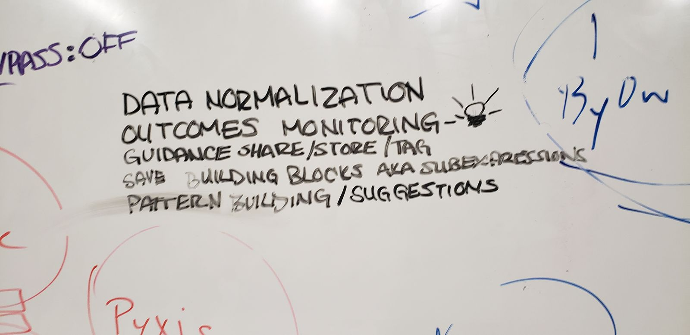
Twelve possible users. Two that mattered first.
We identified twelve user roles. I built four personas to guide the next year of work, then we narrowed MVP focus to the two that drive the data loop: nurses generate data, physicians consume it. That split decided the platform strategy.
Primary data generator
Charts continuously at the bedside workstation.
- Wants integrated systems so she never re-enters the same data in multiple places
- Wants reminders for fluid changes, meds, and feedings, especially when picking up where someone else left off
- Data entry on mobile is cumbersome, so her experience is desktop-first
Primary data consumer
Moves between units; feels responsible for ~40 patients at once.
- Starts every shift with four questions: Who is sick? Who is stable? Who needs follow-up? What fires need putting out?
- Wants a comprehensive patient list sorted by acuity, with recent data, notes, and labs summarized
- Skeptical of new tools, including ours, so trust had to be earned
Four personas in total: SICU attending, ICU anesthesiologist/intensivist, NICU resident, and NICU nurse. Names and photos are omitted to protect participants.
From pain point to product response
Can't tell who is sickest
No ranking by acuity or trajectory.
Re-sorting patient list Patent pending
Ranks patients by acuity and momentum, whether they're improving or regressing, from bedside data.
1:1 ECMO coverage
A specialist tied to every ECMO bedside, 24/7.
Remote monitoring
One specialist oversees up to 12 ECMO patients remotely.
Inconsistent practice
Duplicated effort and missed care-plan steps.
Process-control checklists
Shared checklists keep the whole care team on the same step.
Alert fatigue
Every alarm sounds the same, so none get heard.
Targeted, escalating alerts
Alerts route to the right person and escalate only as needed. Clinicians stay in control to snooze, dismiss, or mute.
Documentation fatigue
2–3× encounter time spent charting.
Pre-populated flowsheets
Pull data the monitors already generate into flowsheets, cutting required fields and re-entry.
From blue-sky list to MVP with RICE
We started with an unconstrained feature list, then I scored every idea on Reach, Impact, Confidence, and Effort. RICE turned debates between product, clinical, and engineering leads into a shared, transparent ranking: most impact for the least development time.
Reach
How many clinicians or patients it touches per shift.
Impact
Effect on patient safety, time, or attention.
Confidence
Strength of research evidence behind the estimate.
Effort
Engineering cost to deliver, including integrations.
| Feature | Reach (1–500) | Impact (1–3) | Confidence | Effort (days) | Score |
|---|---|---|---|---|---|
| Alert severity | 500 | 2 | 80% | 2 | 400 |
| Care plan | 350 | 3 | 100% | 3 | 350 |
| Resorting patient list Patent pending | 500 | 3 | 100% | 5 | 300 |
| Body widget | 300 | 3 | 100% | 3 | 300 |
| Smart search | 500 | 3 | 100% | 5 | 300 |
| Momentum | 500 | 2 | 100% | 7 | 143 |
| Huddle tools | 250 | 2 | 50% | 3 | 83 |
| Personalized dashboard | 500 | 3 | 80% | 21 | 57 |
| Patient handoff | 250 | 2 | 75% | 7 | 54 |
| Contextual role-based views | 500 | 3 | 100% | 30 | 50 |
| Guidance blocks / templates | 200 | 3 | 80% | 10 | 48 |
| Templated notes | 250 | 3 | 90% | 30 | 23 |
| Scorecard reporting | 500 | 1 | 50% | 14 | 18 |
| Care team chat | 250 | 1 | 60% | 21 | 7 |
The ranking made trade-offs visible. Momentum and contextual role-based views scored top marks for reach and impact but carried real build cost, which dropped them down the list. Care team chat scored last: low impact and low confidence it would change outcomes.
Whiteboard, workshop, then one component library for every app
Whiteboarding as a shared language
Whiteboarding was our working medium for design patterns, business goals, user flows, and brainstorming, and the fastest way to get engineers and clinicians reasoning about the same picture.
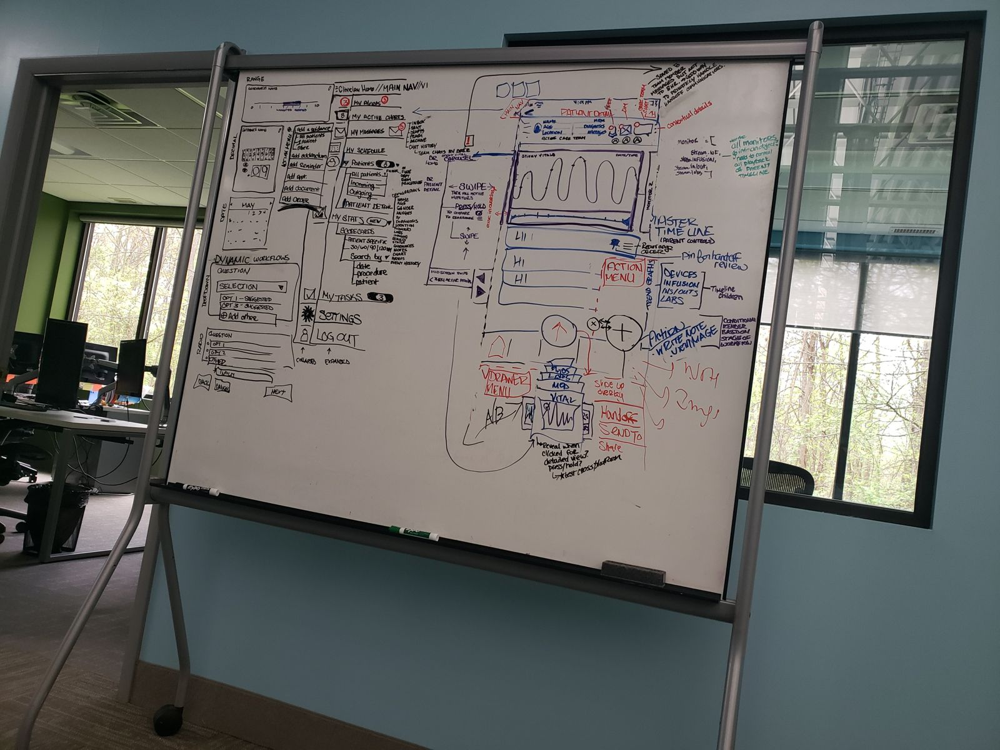
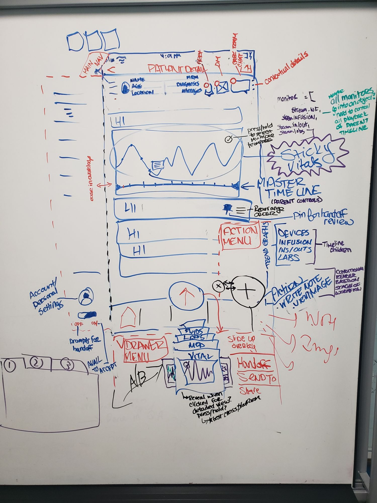
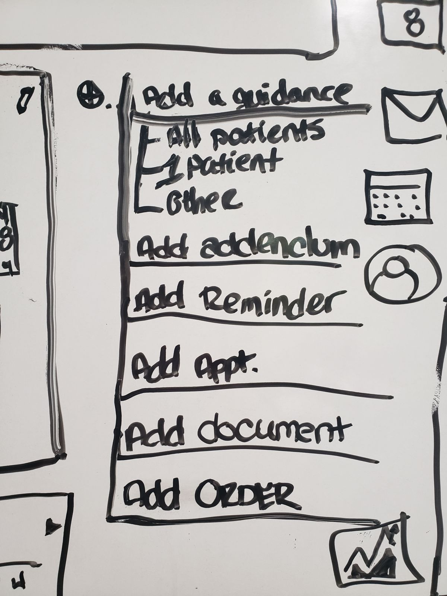
Responsive by design, not by retrofit
I built the UI on a standard 12-column Bootstrap grid so the same components could serve the nurse desktop and physician mobile views, and every future app on the platform, without being rebuilt.
Dark by default, for contrast and battery
Physicians reviewed patients on the go from the mobile app, so I made dark mode the default to conserve battery. On OLED phone screens, dark pixels draw far less power: Purdue researchers measured 39–47% display power savings at full brightness, and 3–9% at typical auto-brightness (Purdue, 2021).
The higher contrast also made it easier to spot variances in patient monitoring data: out-of-range values in bright accent colors stand out sharply against the dark background.
A design system as single source of truth
As components stabilized, I documented them in a design system that engineers used as the reference for implementation. Being a developer myself meant I could spec components in terms the team could build directly.
Understand the problem so well that the solution becomes obvious.
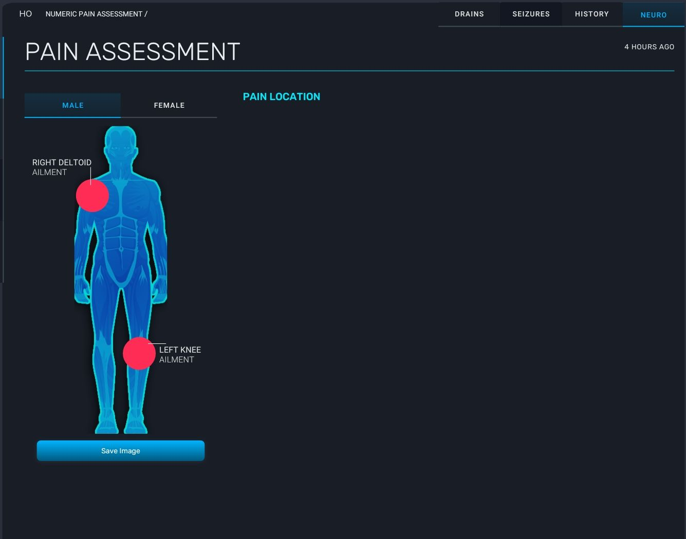
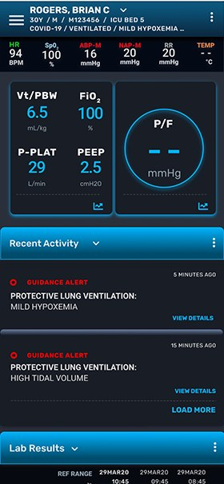
"It can't be done." So I built it.
The body widget scored among the highest in our RICE ranking, but engineering said it couldn't be built. Instead of cutting it, I coded it myself. Clinicians tap the body diagram to mark exactly where a patient is in pain, and the assessment records it.
Demo of the working body widget I coded.
ECMO app screens
Designed in summer 2019. Tap a screen to see the full scrolling page.
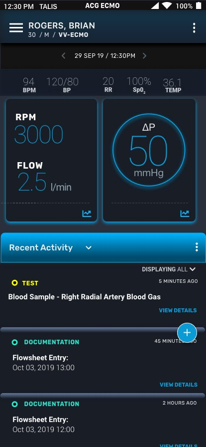
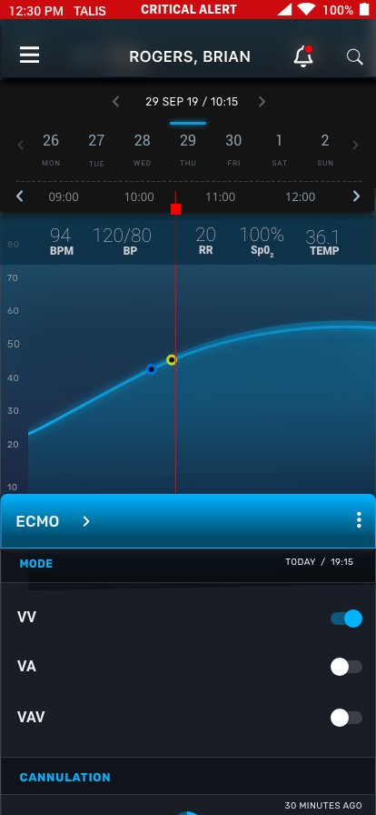
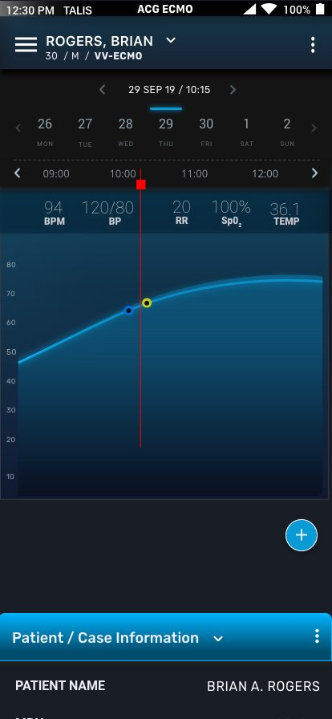
Design system components
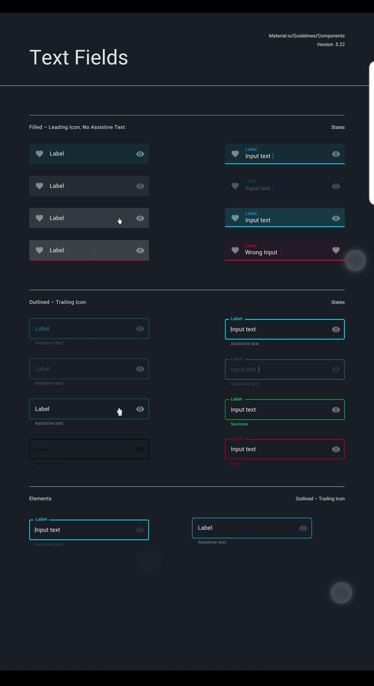
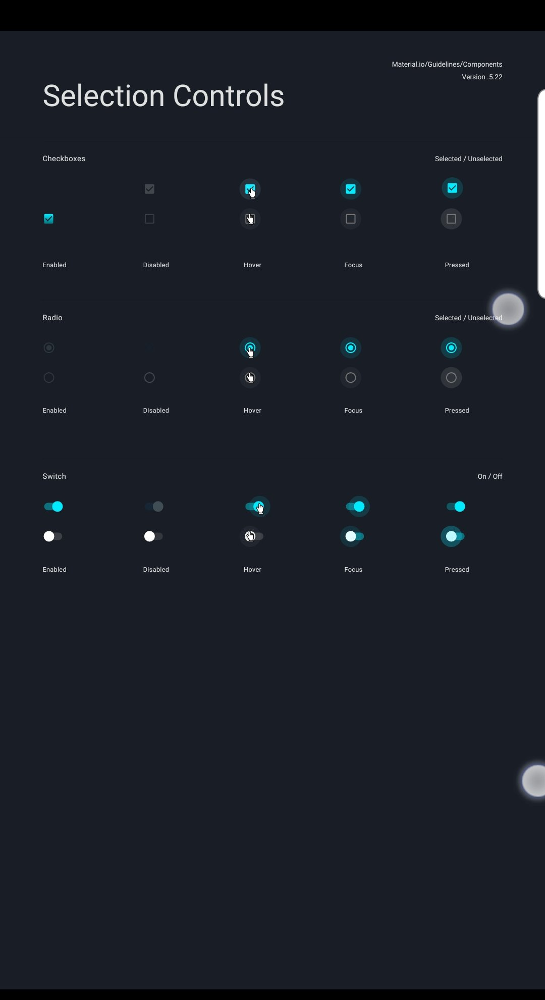
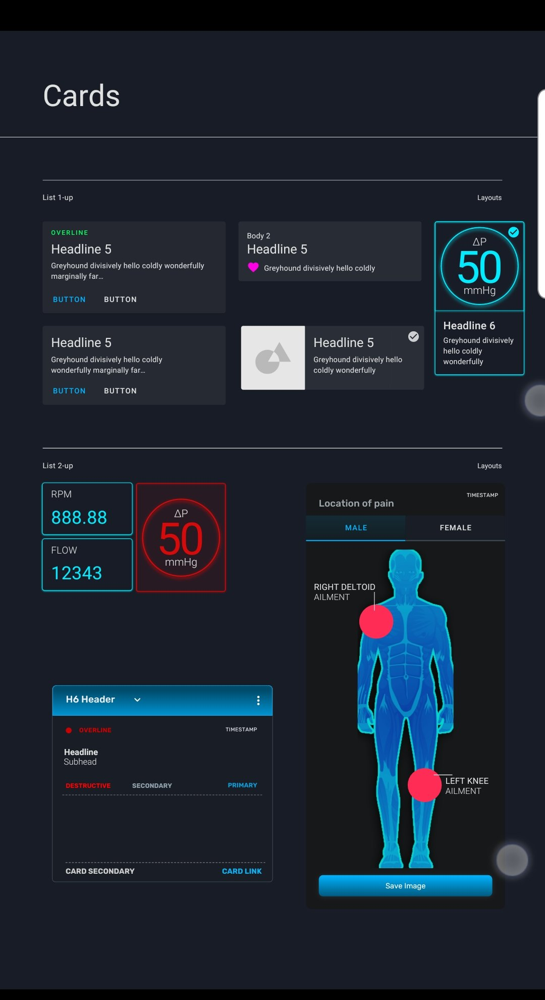
Built for ECMO. Redeployed for COVID-19.
When the pandemic hit, the system paid off in a way none of us planned. Because the remote monitoring app was built from shared, reusable components, we reskinned the Talis-ECMO™ app into a COVID-19 patient monitoring app. Physicians and care teams could watch ventilated patients remotely, reducing their exposure to the virus.
It went live at several major hospitals nationwide during the pandemic.
Earlier, my redesign of Talis's Advanced Clinical Guidance products, delivered in October 2019, helped generate seven figures in revenue for the company.
I designed the re-sorting patient list, which ranks patients by acuity and momentum so clinicians see who needs help first. The feature is now patent pending.
COVID-19 Talis-RemoteView™ screens
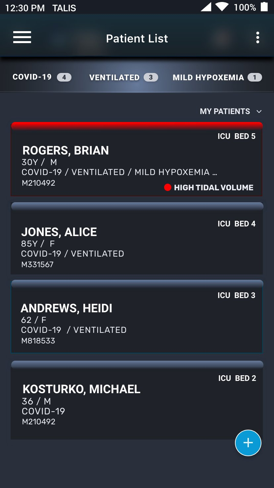
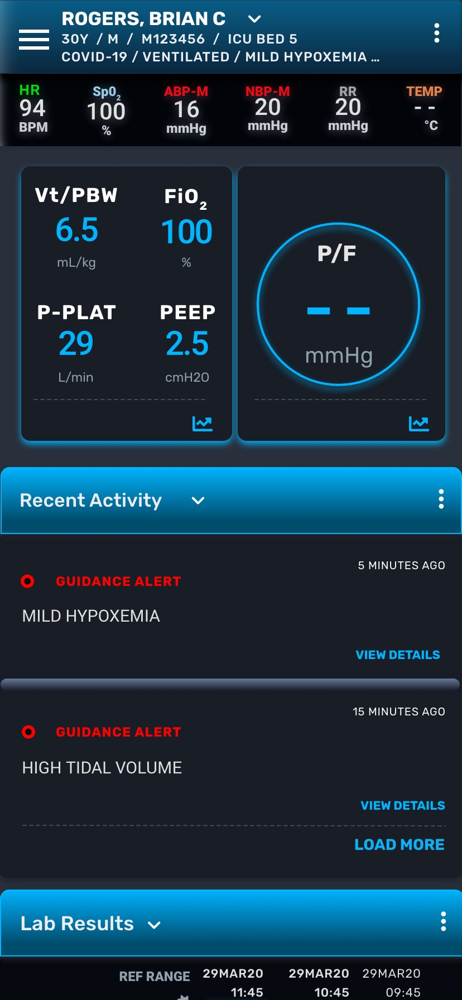
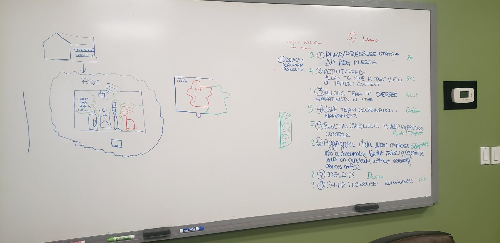
A design system isn't overhead. It's what let a small team ship a pandemic response on existing foundations, extend into Labor and Delivery to help reduce maternal mortality, and stay ready for as many new areas as the future would need.
Live at major hospitals nationwide
ECMO monitoring reskinned for remote monitoring of ventilated COVID-19 patients.
ECMO patients per specialist
Remote monitoring raised coverage from 1:1 to 1:12.
Design practice established
First UX designer; moved an engineering-led company toward design thinking.
What I'd carry into any complex, regulated product
Domain expertise can be borrowed; observation can't
Four days at the bedside outperformed months of secondhand requirements. In complex enterprise tools, I go to where the work happens.
Fewer, smarter signals beat more data
The hardest design decisions were about what not to show or sound. Respecting expert attention is the core of any high-stakes workstation.
Build the system, not just the screens
A shared grid and design system let a small team support two platforms, and then pivot to a pandemic use case, without redesigning from scratch.